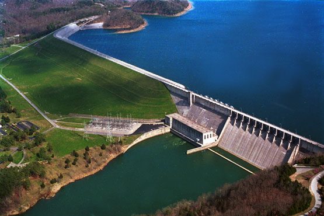
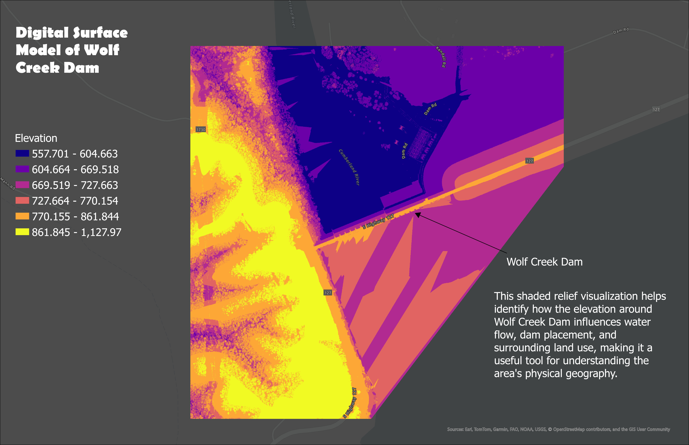

LiDAR-based 3D model of Wolf Creek Dam for the Cumberland River
Wolf Creek Dam is located in Russell County, Kentucky, and was completed in 1951 by the U.S. Army Corps of Engineers. It was built to provide flood control, hydroelectric power, and water storage for the region. The dam forms Lake Cumberland, one of the largest and most popular recreational lakes in the United States, known for its scenic cliffs and deep, clear water.
The goal of this project is to explore and visualize the area around Wolf Creek Dam using point cloud data and interactive maps. I used elevation data to better understand the surrounding terrain and features, providing a detailed view of how the dam fits into the local landscape.
Visualizations created from lidar data provided by KyFromAbove in ArcGIS Pro and Blender. Additional sources of information from name of source, April, 2025.
Page and visualizations created by Noah Snellen for GEO 409, Department of Geography, University of Kentucky. Spring 2025.
Showing of surrounding elevation and length of dam, as well as location of dam on a visualized map
Aerial View of Wolf Creek Dam and surroundings
Shaded relief map of Wolf Creek Dam showing elevation and terrain features that influence water flow and land use